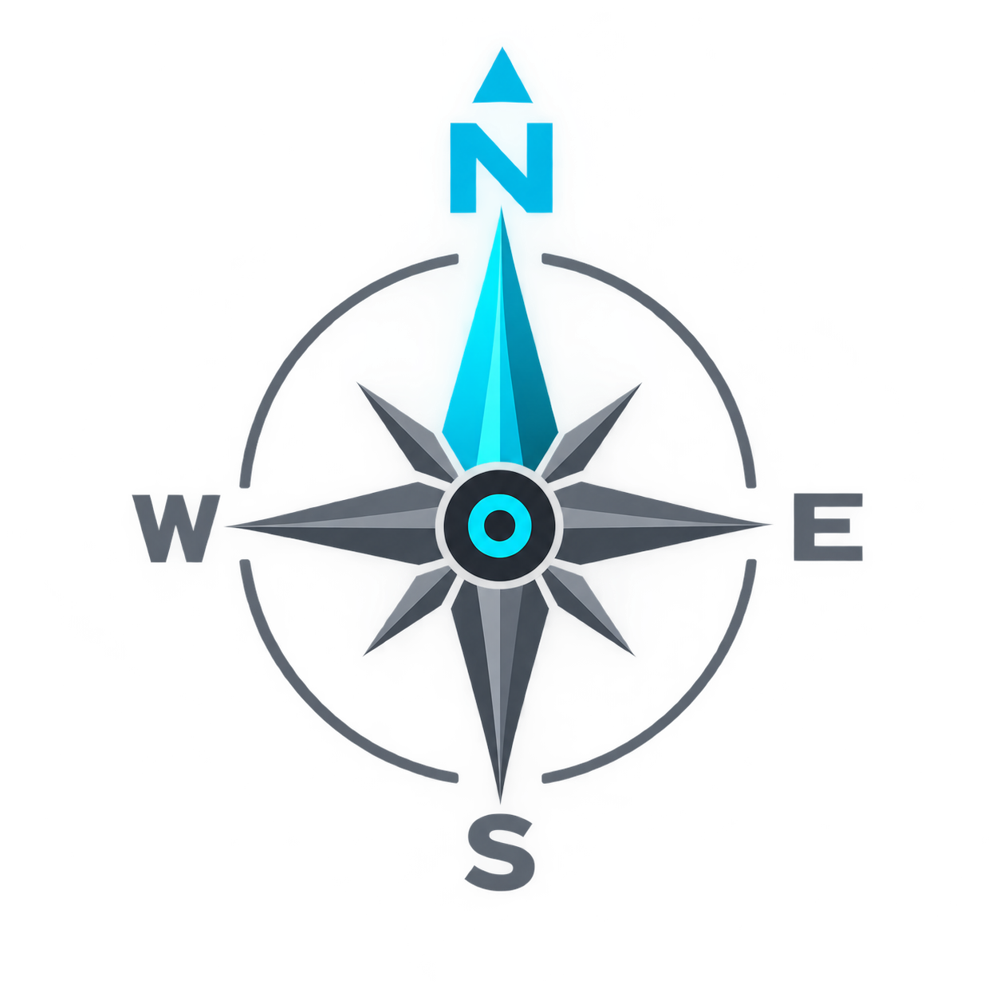
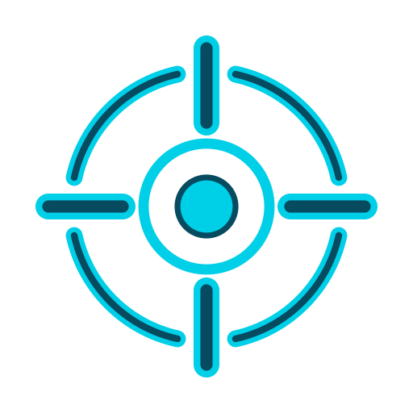

-- m

SELECCIONAR MAPA
OpenStreetMap
IGN Raster
OpenTopoMap
Esri Satélite
Centro de Control
Ajustes Visuales y Estilo
▼
Estilo por defecto del mapa:
OpenStreetMap
IGN Raster
OpenTopoMap
Esri Satélite
Mostrar Cursor Central (X):
Tamaño del Cursor:
45
px
Inclinación Máxima / Pitch:
0
°
Guardar Ajustes
Puntos de Interés
Atribuciones y Créditos